Sappers candidate review Offline candidate. Approximately 90% reference resemblance after Lanczos reduction is a visual target, not a measured score. Native facing mapping, physical pivots, visual approval and runtime acceptance remain open. References follow the current legacy/python/gfx rearrangement.
All families | Contract and validation
Portrait reference and Lanczos exports Repository reference (old frame excluded) Portrait 1x Portrait 2x Portrait 4x Tactical reference and saved sprites 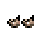
Tiny repository identity reference unit export recipe and pins
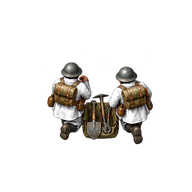
planes/sappers/n-base-2x.png planes/sappers/n-mask-2x.png 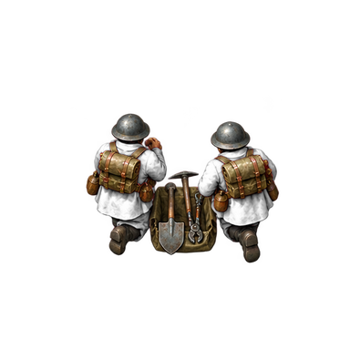
planes/sappers/n-base-4x.png 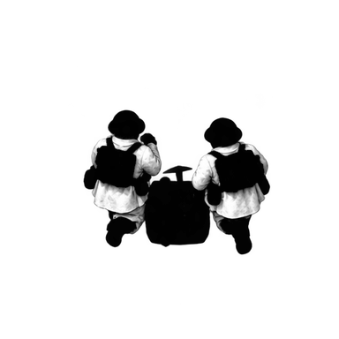
planes/sappers/n-mask-4x.png sprites/sappers/cp/n-normal-2x.png 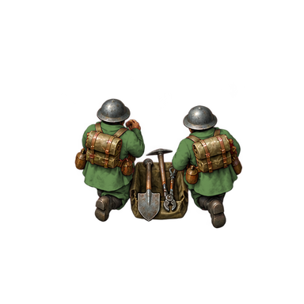
sprites/sappers/cp/n-normal-4x.png sprites/sappers/cp/n-spent-2x.png sprites/sappers/cp/n-spent-4x.png 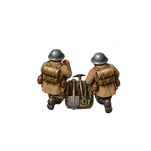
sprites/sappers/ec/n-normal-2x.png sprites/sappers/ec/n-normal-4x.png sprites/sappers/ec/n-spent-2x.png sprites/sappers/ec/n-spent-4x.png sprites/sappers/neutral/n-normal-2x.png 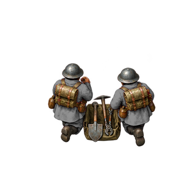
sprites/sappers/neutral/n-normal-4x.png 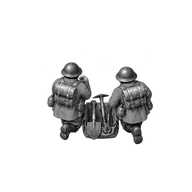
sprites/sappers/neutral/n-spent-2x.png 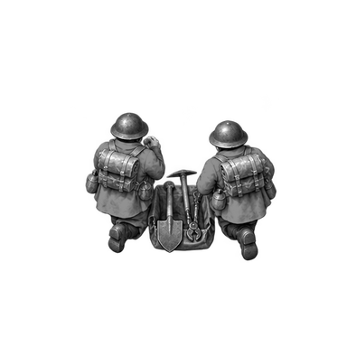
sprites/sappers/neutral/n-spent-4x.png 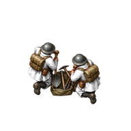
planes/sappers/nw-base-2x.png planes/sappers/nw-mask-2x.png 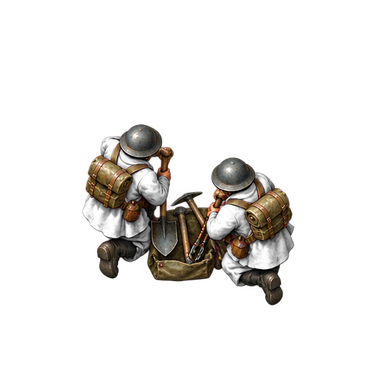
planes/sappers/nw-base-4x.png planes/sappers/nw-mask-4x.png 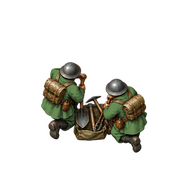
sprites/sappers/cp/nw-normal-2x.png sprites/sappers/cp/nw-normal-4x.png 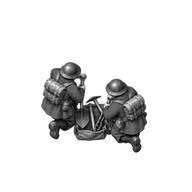
sprites/sappers/cp/nw-spent-2x.png 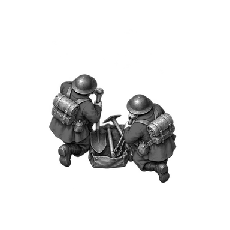
sprites/sappers/cp/nw-spent-4x.png 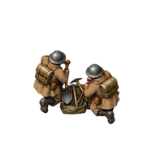
sprites/sappers/ec/nw-normal-2x.png 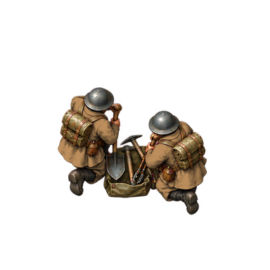
sprites/sappers/ec/nw-normal-4x.png sprites/sappers/ec/nw-spent-2x.png sprites/sappers/ec/nw-spent-4x.png sprites/sappers/neutral/nw-normal-2x.png 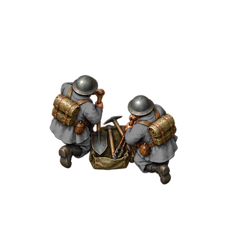
sprites/sappers/neutral/nw-normal-4x.png 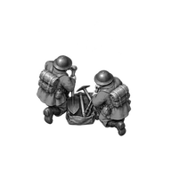
sprites/sappers/neutral/nw-spent-2x.png 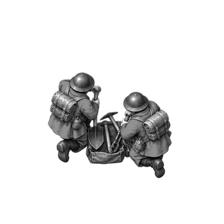
sprites/sappers/neutral/nw-spent-4x.png 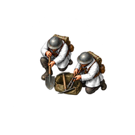
planes/sappers/sw-base-2x.png planes/sappers/sw-mask-2x.png 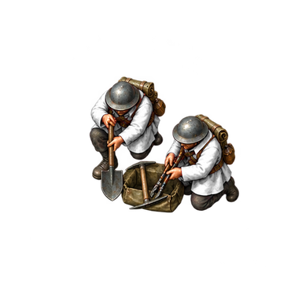
planes/sappers/sw-base-4x.png 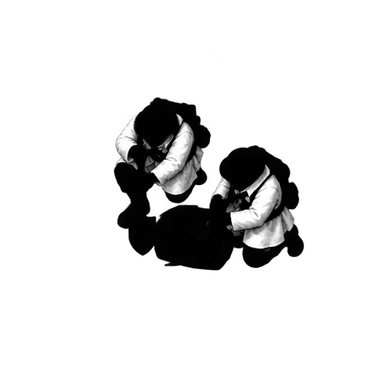
planes/sappers/sw-mask-4x.png 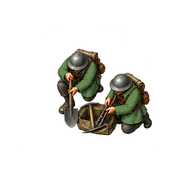
sprites/sappers/cp/sw-normal-2x.png 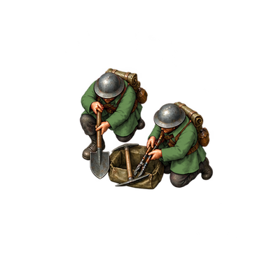
sprites/sappers/cp/sw-normal-4x.png 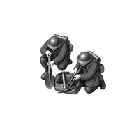
sprites/sappers/cp/sw-spent-2x.png 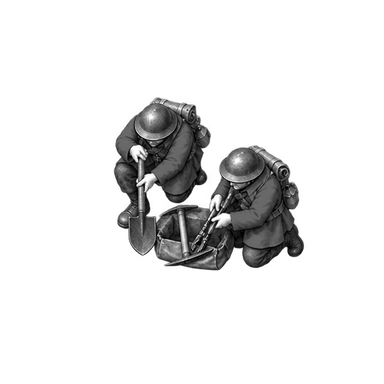
sprites/sappers/cp/sw-spent-4x.png 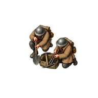
sprites/sappers/ec/sw-normal-2x.png 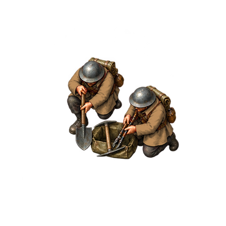
sprites/sappers/ec/sw-normal-4x.png 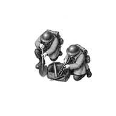
sprites/sappers/ec/sw-spent-2x.png sprites/sappers/ec/sw-spent-4x.png 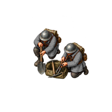
sprites/sappers/neutral/sw-normal-2x.png 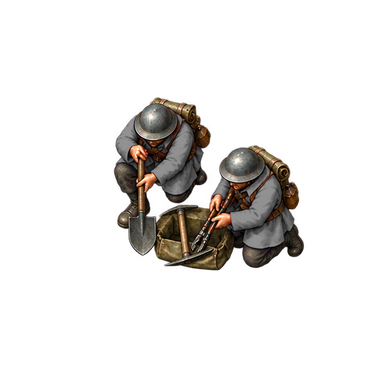
sprites/sappers/neutral/sw-normal-4x.png 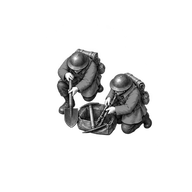
sprites/sappers/neutral/sw-spent-2x.png sprites/sappers/neutral/sw-spent-4x.png planes/sappers/s-base-2x.png planes/sappers/s-mask-2x.png 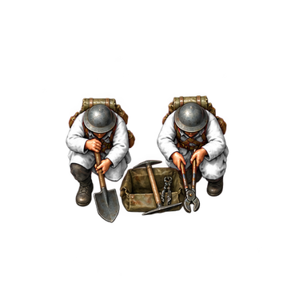
planes/sappers/s-base-4x.png 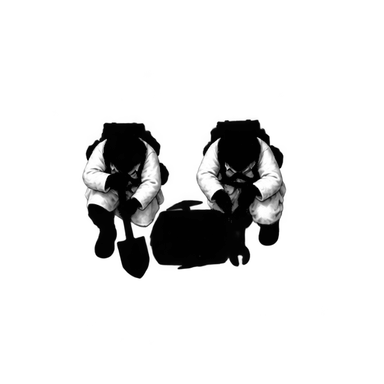
planes/sappers/s-mask-4x.png 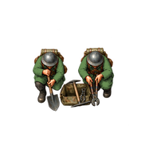
sprites/sappers/cp/s-normal-2x.png 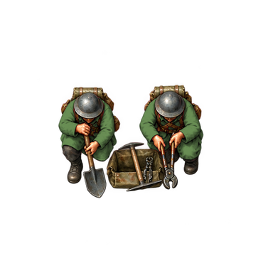
sprites/sappers/cp/s-normal-4x.png 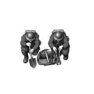
sprites/sappers/cp/s-spent-2x.png sprites/sappers/cp/s-spent-4x.png 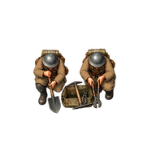
sprites/sappers/ec/s-normal-2x.png 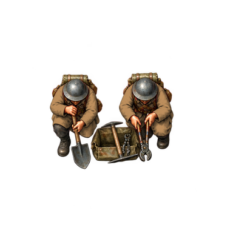
sprites/sappers/ec/s-normal-4x.png sprites/sappers/ec/s-spent-2x.png 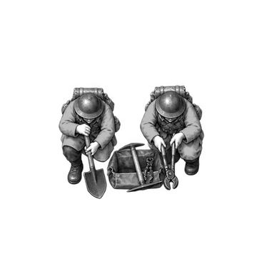
sprites/sappers/ec/s-spent-4x.png sprites/sappers/neutral/s-normal-2x.png 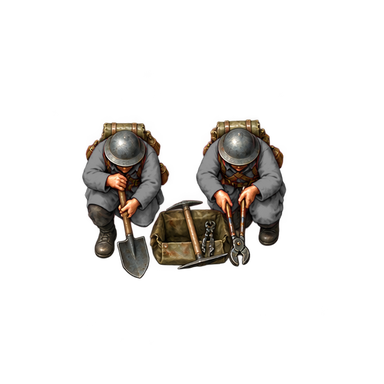
sprites/sappers/neutral/s-normal-4x.png 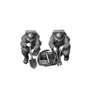
sprites/sappers/neutral/s-spent-2x.png sprites/sappers/neutral/s-spent-4x.png 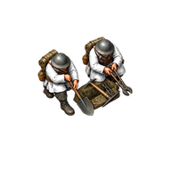
planes/sappers/se-base-2x.png 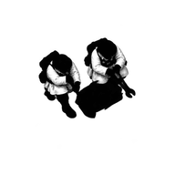
planes/sappers/se-mask-2x.png 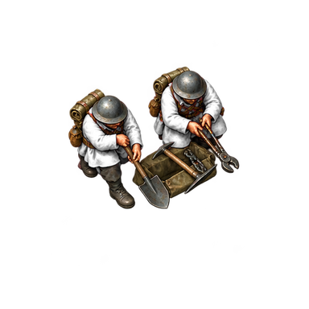
planes/sappers/se-base-4x.png 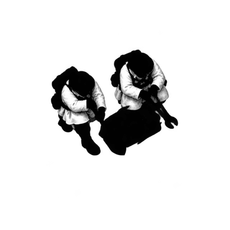
planes/sappers/se-mask-4x.png sprites/sappers/cp/se-normal-2x.png 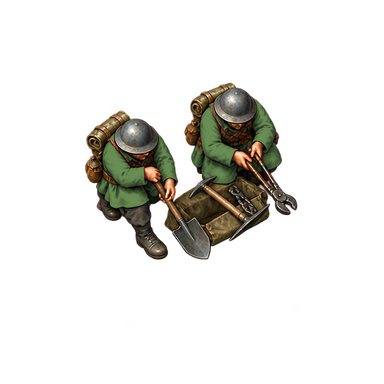
sprites/sappers/cp/se-normal-4x.png 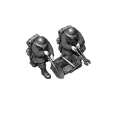
sprites/sappers/cp/se-spent-2x.png 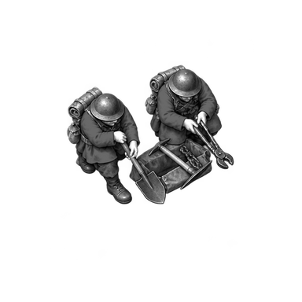
sprites/sappers/cp/se-spent-4x.png 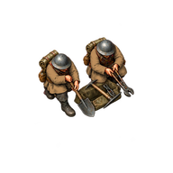
sprites/sappers/ec/se-normal-2x.png sprites/sappers/ec/se-normal-4x.png sprites/sappers/ec/se-spent-2x.png sprites/sappers/ec/se-spent-4x.png sprites/sappers/neutral/se-normal-2x.png sprites/sappers/neutral/se-normal-4x.png sprites/sappers/neutral/se-spent-2x.png sprites/sappers/neutral/se-spent-4x.png planes/sappers/ne-base-2x.png planes/sappers/ne-mask-2x.png planes/sappers/ne-base-4x.png planes/sappers/ne-mask-4x.png sprites/sappers/cp/ne-normal-2x.png sprites/sappers/cp/ne-normal-4x.png sprites/sappers/cp/ne-spent-2x.png sprites/sappers/cp/ne-spent-4x.png sprites/sappers/ec/ne-normal-2x.png sprites/sappers/ec/ne-normal-4x.png sprites/sappers/ec/ne-spent-2x.png sprites/sappers/ec/ne-spent-4x.png sprites/sappers/neutral/ne-normal-2x.png sprites/sappers/neutral/ne-normal-4x.png sprites/sappers/neutral/ne-spent-2x.png sprites/sappers/neutral/ne-spent-4x.png sheets/sappers-white-2x.png sheets/sappers-white-4x.png sheets/sappers-checker-2x.png sheets/sappers-checker-4x.png scenes/grass-normal-p0-2x.png scenes/grass-normal-p0-4x.png scenes/grass-normal-p1-2x.png scenes/grass-normal-p1-4x.png scenes/grass-spent-p0-2x.png scenes/grass-spent-p0-4x.png scenes/grass-spent-p1-2x.png scenes/grass-spent-p1-4x.png scenes/grass_w-normal-p0-2x.png scenes/grass_w-normal-p0-4x.png scenes/grass_w-normal-p1-2x.png scenes/grass_w-normal-p1-4x.png scenes/grass_w-spent-p0-2x.png scenes/grass_w-spent-p0-4x.png scenes/grass_w-spent-p1-2x.png scenes/grass_w-spent-p1-4x.png scenes/mud-normal-p0-2x.png scenes/mud-normal-p0-4x.png scenes/mud-normal-p1-2x.png scenes/mud-normal-p1-4x.png scenes/mud-spent-p0-2x.png scenes/mud-spent-p0-4x.png scenes/mud-spent-p1-2x.png scenes/mud-spent-p1-4x.png portrait export recipe and pins
Masters and exact prompts art/source/units/reference-v1/sappers.png
art/source/portraits/reference-v1/sappers-01.png
art/recipes/units/reference-v1/sappers-atlas-01.json
art/recipes/portraits/reference-v1/sappers-01.json